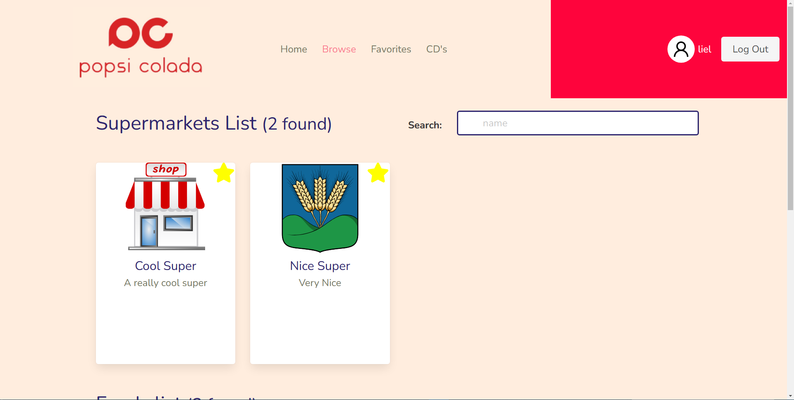

So when I did my devops course at IITC the class had 2 projects to practice OOP (object-oriented programming): a storehouse manager of CD's, and supermarkets- simulator where you can demonstrate the relationship between markets and food items.
So that gave me idea for my next project: to implement similar apps on the web and combine them together. I ended up adding more features than the asignments we recieved originally.
FeaturesBrowsing markets lets you "buy" (there is no real money transfer system in place) from the foods that particular market is offering.
Browsing foods lets you see in which markets that food item is available in, as well as view some additional info such as nutritional value of the food.
In addition there is the collection of CD's where you can create, update, delete, view your collection of CD's as well as search for a particular CD from your list.
 What I learnedIn this project I dived more deeply into Django, designing the REST api to support all the different querries I would have to do about the markets, foods and CD's, using models and modelViews.
Link to app